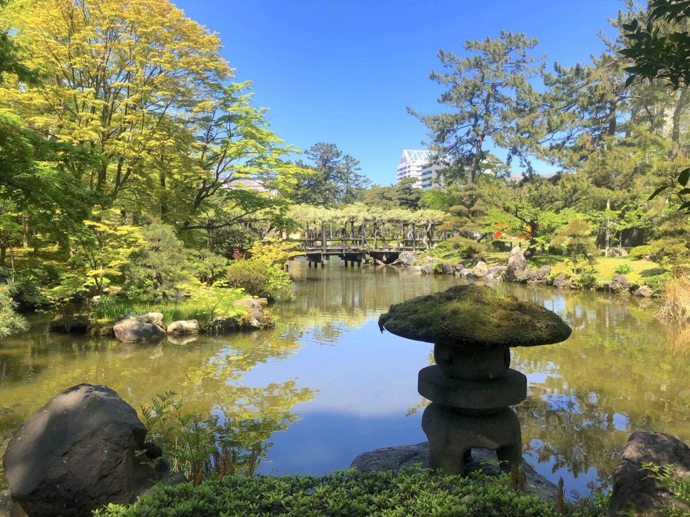
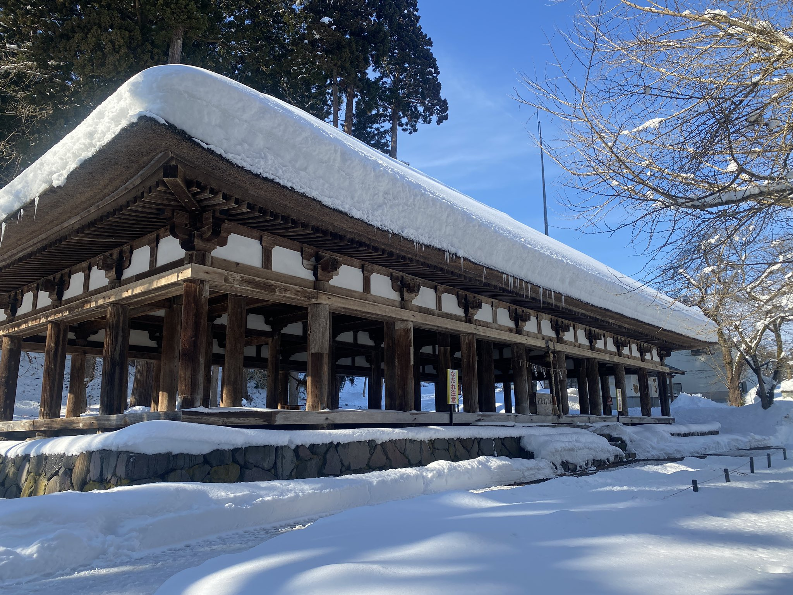

三重のおすすめ観光スポット 白子港緑地
海と公園が合併しており毎年この場所でお祭り花火が開催され大人数の人が参加されている。花火は約50分間に3000発の花火が打ち上がり、連続花火や海上自爆を鑑賞できます。


埼玉のおすすめ観光スポット 吉見百穴
埼玉県には穴がたくさん開いている不思議な場所「吉見百穴(よしみひゃっけつ)」があります。 古墳時代の後期～終末期(6世紀~7世紀)に造られた横穴墓で、全部で現在確認されているだけで219基あります。

中国のおすすめ観光スポット 徳天瀑布（デティエン滝）』
徳天瀑布（デティエン滝）は、中国広西チワン族自治区南寧市にある高さ約70メートル、幅約200メートルを誇る壮大な滝であり、ベトナムとの国境に接しています。 この滝は、世界で最も美しい国境の滝の一つとして知られており、滝の周辺には豊かな植生と多様な動植物が生息し,その雄大な自然景観で多くの観光客を魅了しています。

神奈川のおすすめ観光スポット 東扇島東公園
川崎市川崎区東扇島の人工海浜を有した公園。海と空と緑の中で飛行機や大型船をゆっくり眺めることができる。 夜になるとランタンが灯り、日中とは違った幻想的な表情になる。対岸の工場群の灯りも美しく、夜景が楽しめる。

新潟のおすすめ観光スポット 白山神社
新潟県新潟市にある白山神社です。縁結びや、子宝や安産などのご利益があります。その歴史は1000年以上もあり、昔ならではの風景が楽しめます。


仙台のおすすめ観光スポット 新宮熊野神社
新宮熊野神社は、平安時代に創建され、長床（ながとこ）と呼ばれる平安時代末期の建築が特徴です。 全面吹き抜けの建物は国の重要文化財に指定されており、訪れる人々に歴史と静寂を感じさせます。